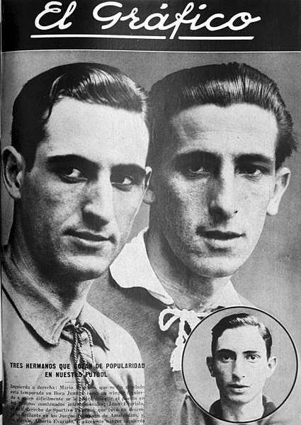
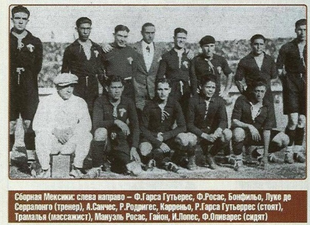
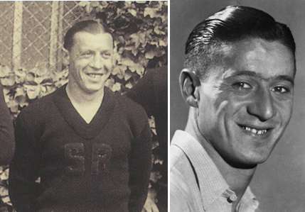

Сергей Колосков. 13-12-2020
На первом чемпионате мира 1930 г. в трёх командах в составе было по два родных брата. Так уж распорядился жребий, что все эти команды попали в одну группу на первом этапе.
Это была первая самая полноценная группа из 4 команд на чемпионатах мира, и единственная такая на ЧМ-30. И номер у группы тоже был 1. За выход в плей-офф (в полуфинал) боролись в этой группе команды трёх конфедераций, как в прочем, и в группе 4, но там было только 3 команды.
Итак, в группе 1 играли Аргентина, Чили, Франция и Мексика — перечислим их в том порядке, в котором они оказались после группового этапа.
Только у чилийцев из этого квартета не было в составе братьев. В сборной Аргентины играли 28-летний Хуан и 21-летний Марио (официально его имя Марино) Эваристо. Старший играл в полузащите, младший был форвардом. Все игры в группе братья отыграли вместе, Марио забил последний гол чилийцам в последнем матче группового этапа.
В сборной Франции была своя пара братьев. Но известность получил только младший из них, всемирную известность. Речь о Люсьене Лоране — авторе самого первого гола в истории чемпионатов мира. А забил он его в ворота сборной Мексики на 19 мин игры, когда сами французы ещё играли в полном составе. Старший брат Жан так и не появился на поле ни в одном из матчей в составе сборной Франции на чемпионате мира. Он вообще сыграл всего 9 игр за сборную, только в одной из них был вместе с младшим братом в составе в 1932 году. Да и Люсьен не на много его обошёл — 10 матчей в сборной. Они и по возрасту были близки — меньше года разница, оба родились в декабре, старший 30-го 1906 г., а младший 10-го числа 1907 года. Как и в случае с аргентинскими братьями — младший Люсьен был нападающим.
В сборной Мексики было два поколения братьев. Капитаном команды был 33-летний Рафаэль Гарса Гутьеррес — легендарная личность в мексиканском футболе. Он с группой единомышленников создал команду «Америка». В 1927 г. официально была создана сборная Мексики — так Рафаэль был её первым главным тренером! На ЧМ-30 капитан мексиканцев оказался самым возрастным игроком всего чемпионата. Сыграл во всех 3 матчах на турнире, был защитником. Его 26-летний брат Франсиско на турнире появился лишь в матче с Аргентиной, также играл в защите. И это был его единственный матч в карьере в футболке своей сборной. Оба брата выделялись своим ростом.
Была и другая пара братьев у мексиканцев, но оба были намного моложе братьев Гарса Гутьеррес. В середине поля играл Фелипе Росас, а в нападении Мануэль Росас. Мануэлю было 18 полных лет, а Фелипе 20. Оба брата Росаса сыграли во всех 3 матчах на турнире за свою команду.
Данные по возрасту Мануэля Росаса оказались неверными, но ошибочная дата его рождения 17 апреля 1912 г. фигурирует во многих источниках. Американские статистики недавно предъявили сканы паспорта и свидетельства о смерти Мануэля. Так вот родился он в редкую дату — 29 февраля 1908 года. И оказался старшим братом, а их вообще-то было трое футболистов. Вот дата рождения третьего, Хуана, и приписывалась Мануэлю, омолодив его на 4 года. Но и на сайте rsssf.com, и в статье в Википедии про автоголы на ЧМ Мануэль по-прежнему указан самым молодым автором гола на ЧМ-30 и самым молодым автором автогола на всех чемпионатах мира. Будем исправлять.
20 июля 1930 г. в матче Аргентина — Мексика в составе мексиканцев играли обе «братские» пары, а вот аргентинский дуэт тренеров Трамутола и Олазар состав видоизменили по сравнению с первой игрой. И оба аргентинских брата Эваристо оказались на скамейке. Так вот и не состоялось интересное событие в истории чемпионатов мира — три пары братьев в одном матче. Но две пары родных братьев на поле были, в составе мексиканцев. Между прочим, также довольно редкостное событие на мундиалях.
Да к тому же Мануэль Росас отметился в протоколах чемпионата мира в разных номинациях.
Во-первых, он автор самого первого автогола чемпионатов мира, на него записали (впоследствии, через много лет) второй гол чилийцев в том матче.
Во-вторых, он же является и автором самого первого забитого пенальти на чемпионатах мира. А случилось это в матче с Аргентиной, правда при счёте 0:3. Мануэль реализовал пенальти. Для чемпионата мира 1930 г. эта фраза звучит по-особому. Ведь это была третья попытка забить 11-метровый на турнире. В двух предыдущих на высоте были вратари: накануне чилиец Гильермо Сааведра не смог переиграть француза Алексиса Тепо, а в том самом матче Аргентина — Мексика 12 минутами ранее удар аргентинца Фернандо Патерностера парировал мексиканец Оскар Бонфильо.
В-третьих — и опять про пенальти. Во втором тайме игры с аргентинцами уже при счёте 1:5 Мануэлю вновь довелось бить 11-метровый. Только на сей раз вратарь Анхель Боссио разгадал замысел мексиканца. Но расторопность форварда взяла верх — Мануэль первым успел к отбитому вратарём мячу и добил его в ворота уже с игры. Вот среди добивших отбитые пенальти (а таких совсем единицы) на чемпионатах мира Мануэль Росас самый молодой точно.
Международная федерация футбольной истории и статистики (IFFHS) наконец-то в 2020 г. предъявила миру свой сайт, наполненный разнообразной информацией. Благодаря, наверное, пандемии и самоизоляции, и как следствие — появившемуся времени, стали появляться на этом сайте статистические данные по первым десятилетиям 20 века (и ранее), по некоторым командам.
Так вот на том самом сайте в посте под №671, посвященном сборной Аргентине (часть 11), утверждается, что Марио и Хуан Эваристо являются первой парой родных братьев, сыгравших в финальной части чемпионатов мира. Правда, слова «final round» присутствуют только в английской версии текста. На остальных языках написано просто слово финал.
В чём подвох? Просто мексиканские братья Росасы сыграли первыми в матчах финальной стадии чемпионатов мира 13 июля 1930 г. против Франции. Аргентинцы же первый матч сыграли 15 июля с теми же французами.
А вот про финальный матч сказано абсолютно верно. Пара родных братьев Эваристо из Аргентины, хоть и не стала чемпионами мира, но в финале сыграли первыми.
Вот фото братьев из Аргентины в их крупнейшем спортивном издании El Grafico в декабре 1928 г. с подзаголовком: «Три брата, которые пользуются популярностью в нашем футболе».
Слева направо: Марио, левый вингер (так указано в подписи); старший Хуан, правый полусредний, серебряный призёр Олимпиады 1928 г.; в медальоне третий брат Альберто — прекрасный левый вингер (так в подписи). Про третьего брата, честно сказать, не обладаю полной информацией.

А это вся сборная Мексики, в том числе и обе пары братьев — перед матчем с Аргентиной. Братья Гарса Гутьеррес стоят крайние слева и справа. Братья Росас подле вратаря.

По чемпионату мира 1930 г. к теме родственников есть только одно дополнение. В сборной Бельгии все два матча на турнире отыграл 29-летний полузащитник Пьер Брен, игравший и на Олимпиаде в 1928 году. В 1938 г. единственный матч на третьем чемпионате мира в сборной Бельгии нападающим сыграл его младший брат Раймон. И сыграл он уже в приличном возрасте, в 31 год. Кстати, Пьер умер довольно рано, ему едва исполнилось 51.
Среди трёх пар братьев, игравших на ЧМ-30, долгожителями оказались французы. Люсьен Лоран ушёл в возрасте 97 лет, его брат дожил до 88. Один из братьев Гарса Гутьеррес — младший Франсиско — также перешагнул 90-летний рубеж, остановившись на цифре 93 полных года. Марио Эваристо скончался в возрасте 84 лет. Мануэль Росас скончался 20.02.1989, ему было почти 81. Фелипе Росас дожил до 76 лет. Почти 76 было и Хуану Эваристо в день его смерти. Старший Гарса Гутьеррес Рафаэль — был единственным из пар братьев, кто родился в 19 столетии. А Люсьен Лоран — единственный из них, кто жил в 21 веке.
Запомним их молодыми, двух французов. Слева — старший Лоран.

Между прочим, у мексиканцев в составе делегации на чемпионате мира 1930 г. была и ещё одна пара братьев. Вратарь Исидоро Сота был младшим братом Эрнесто Сота, который возглавлял мексиканскую делегацию. Вообще-то Эрнесто играл сам в сезоне 1929-30 в своём клубе, назабивал много голов, играл за сборную Мексики на Олимпиаде 1928 года.
На турнире 1934 г. ни в одной команде не было двух играющих братьев. Только в сборной Швейцарии 30-летний защитник Вальтер Вейлер, младший брат, отыграл оба матча. А старший 33-летний Макс был в глубоком запасе. Между прочим, Вальтер скончался от сердечного приступа прямо на занятиях с инструкторами 4 мая 1945 г. в 41-летнем возрасте.
А в двух командах на ЧМ-34 играли будущие отцы тех, кто сыграет на грядущих турнирах Кубка мира. Француз Рожер Рьо (или Рио) был полузащитником «трёхцветных» в их единственном матче на ЧМ-34 с Австрией. Ему тогда было 21. Только в 1948 г. у него родится сын Патрис, который в 29-летнем возрасте сыграет свой единственный матч на ЧМ-78 в матче Франция — Италия. И отец, и сын в сборной сыграли не много — отец 18, а сын 17 матчей.
В сборной Испании на турнире 1934 г. играл нападающий Марти Вентолра, которому было 27 лет. Сыграл только в переигровке четвертьфинала с Италией. Сын Хосе родится в 1943 году, но уже в Мексике, куда Вентолра перебрался в 1937 г. из-за гражданской войны на родине. Поэтому-то Хосе Вантолра (есть маленькая разница в написании фамилии у них) играл за сборную Мексики, благо и чемпионат 1970 г. как раз там и проходил. Сын также сыграл только единственный матч на чемпионатах мира, также в 27-летнем возрасте и также против Италии в четвертьфинале. И также проиграли итальянцам. Сын подольше отца был в обойме сборной, но Мексики, сыграв 30 матчей с 1963 по 1970 годы.
Примерно такая же ситуация с родственниками была и на чемпионате мира 1938 года. Только будущий отец был один, а братья в запасе были в двух командах.
В сборной Бразилии на ЧМ-38 сыграл Домингос да Гия, защитник 25 лет, играл в 4 матчах из 5. Его имя упоминается в гимне бразильского клуба «Бангу», а также он один из лучших защитников «Фламенго» за всю его историю. Его сын Адемир Феррейра де Гия родится в 1942 г. и сыграет один только матч на ЧМ-74. Интересно, что и отец, и сын играли со сборной Польши, и отец, и сын играли в матче за 3-е место, но отец утешительную медаль заработал. Домингос дожил до 21 века, умер в мае 2000 года в возрасте 87 лет, его звали «Божественный учитель». Сын отца не посрамил, стал рекордсменом «Палмейраса» по количеству игр (901) и входит в тройку его лучших бомбардиров (153).
В сборной Польши играл старший 24-летний Рышард Леон Пьец (Пец), а младший 22-летний Ежи (Вильхельм) был в запасе. В сборной же Швейцарии наоборот — играл младший Жорж Эби, 24-летний нападающий, а 27-летний Поль наблюдал со скамейки. Ежи Пьец скоропостижно скончался в 38 лет. Жорж Эби прожил 86 лет, а дата смерти его брата неизвестна.
На первых турнирах Кубка мира не было братьев-чемпионов или тех, кто вместе прошли несколько чемпионатов. Всё это будет. Но это другая веха в истории этих турниров.